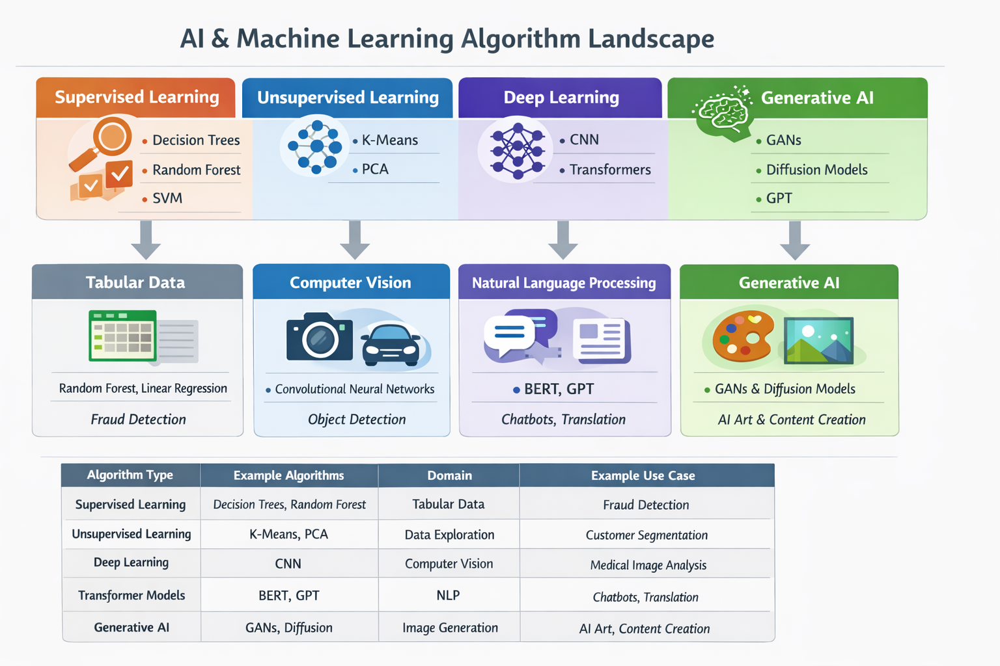

AI & Machine Learning Algorithm Landscape
This project presents a visual framework of major machine learning algorithm categories and their primary application domains. The goal is to demonstrate how different machine learning models align with specific types of data and real-world AI problems.
Understanding the relationship between algorithms and problem domains is essential when designing AI systems.
Algorithm Categories
Supervised Learning
Supervised learning algorithms learn patterns from labeled data.
Examples
- Decision Trees
- Random Forest
- Support Vector Machines
- Linear Regression
Common Use Cases
- Fraud detection
- Credit risk prediction
- Sales forecasting
Unsupervised Learning
Unsupervised algorithms identify patterns in unlabeled data.
Examples
- K-Means Clustering
- Principal Component Analysis (PCA)
- Hierarchical Clustering
Use Cases
- Customer segmentation
- Anomaly detection
- Data exploration
Deep Learning
Deep learning models use neural networks to process complex data such as images, audio, and text.
Examples
- Convolutional Neural Networks (CNN)
- Recurrent Neural Networks (RNN)
- Transformers
Use Cases
- Computer vision
- Speech recognition
- Language translation
Generative AI
Generative AI models create new content such as text, images, or audio.
Examples
- Generative Adversarial Networks (GANs)
- Diffusion Models
- GPT models
Use Cases
- Image generation
- Text generation
- Creative content production
Project Visual
